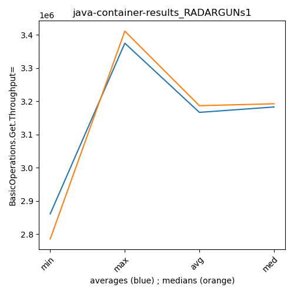
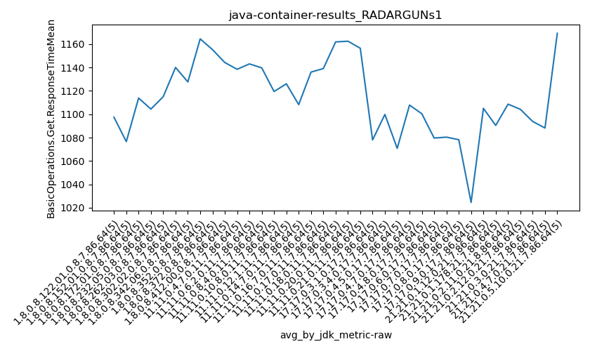

java- RADARGUNs1
Context at bottom
/home/jvanek/git/benchmarks-in-nested-virtualisation-toolchain/final_results/container_results/container-results_J2DBENCH
java-
RADARGUNs1
/home/jvanek/git/benchmarks-in-nested-virtualisation-toolchain/final_results/container_results/container-results_RADARGUNs3
java-
RADARGUNs1
/home/jvanek/git/benchmarks-in-nested-virtualisation-toolchain/final_results/container_results/container-results_RADARGUNs1
java-
RADARGUNs1
container-results_RADARGUNs1
- container-results_RADARGUNs1 - throughput get
- container-results_RADARGUNs1 - throughput put
- container-results_RADARGUNs1 - response mean time get
- container-results_RADARGUNs1 - response mean time put
container-results_RADARGUNs1 - throughput get
Expected number of java- JDKs: 37
1st avgmed_alljdks_metric:
/home/jvanek/git/benchmarks-in-nested-virtualisation-toolchain/final_results/result_processing.py /home/jvanek/git/benchmarks-in-nested-virtualisation-toolchain/final_results/container_results/container-results_RADARGUNs1 BasicOperations.Get.Throughput= False
values: [3053182, 2785919, 2991028, 2753258, 2723131, 2776607, 3107951, 3016018, 2777572, 3137388, 3104846, 2729552, 3009601, 2648167, 2925824, 3080763, 3014881, 3258667, 3252614, 3042152, 3230464, 3126426, 2952032, 3224612, 3042294, 3035752, 3056359, 3121985, 3231618, 3315154, 3190952, 3051164, 3231241, 3144964, 3280745, 3085205, 3185528, 2802674, 3154829, 3214638, 3125748, 3250199, 3236320, 3231045, 3037158, 3177368, 2946394, 3301622, 3250102, 3239430, 3125271, 3247388, 3181620, 3141538, 3175918, 3186448, 3204611, 3087243, 3144458, 3214156, 2808723, 3221873, 3203051, 3192653, 3081940, 3162248, 3279996, 3193765, 2993559, 3283348, 3225395, 3148432, 3287343, 3196293, 3150473, 3182356, 3331523, 3205051, 3200822, 3316726, 3253484, 3173438, 3194461, 2908712, 3198593, 3148424, 3195961, 3236460, 3237598, 3177663, 3192094, 3141260, 3102494, 3106839, 3153343, 3150425, 3191109, 3233903, 3217367, 3163215, 2845771, 3254554, 3146477, 3128203, 3166194, 2864801, 3149692, 3351355, 3280509, 3360035, 2766577, 3133205, 2804369, 3280090, 2935985, 3165765, 3192331, 3347857, 3355312, 3276735, 3280548, 3014452, 3190373, 3380336, 3050175, 2991387, 2818102, 3329872, 2842155, 2993234, 3303689, 3044319, 3388639, 3337757, 3094288, 3358801, 3366892, 3267768, 3321349, 3100867, 3335145, 3344078, 3084513, 3374915, 3302339, 3411316, 3411192, 3405113, 3418311, 3229023, 3355224, 3164593, 3348496, 3040037, 3337746, 3167512, 3121420, 3415320, 3375842, 3305391, 3189074, 3390677, 3391568, 3050533, 3125095, 3113075, 3396516, 3329599, 3108044, 3441304, 3356972, 3408246, 3130490, 3399571, 3199510, 3161911, 3120363, 3360243, 3390140, 3078834, 3042160, 3295754, 3312513, 3104478, 3316530]

Expected number of iterations: 5
final number of values: 185 out of 185
Pass rate: 100.0%
values: (2648167, 3441304, 3166787.8540540542, 3186448)

** accuracy from all jdks and runs
more is better
MIN: 2648167
MAX: 3441304
AVG: 3166787.8540540542
MED: 3186448
Relative differences 1:
MIN-MAX: 23.0 %
MIN-AVG: 16.0 %
MIN-MED: 17.0 %
MAX-MIN: -30.0 %
MAX-AVG: -9.0 %
MAX-MED: -8.0 %
AVG-MED: 1.0 %
stored to java-.properties. sort | uniq that!
2nd avgmed_by_jdk_metric:
values: [2861303.6, 2963107.2, 2883598.0, 3129815.4, 3115165.6, 3152173.6, 3179813.2, 3088574.8, 3176094.0, 3182983.2, 3174347.0, 3167383.2, 3101648.0, 3182583.2, 3201587.2, 3247295.6, 3145737.6, 3199221.2, 3139206.0, 3191203.8, 3108239.8, 3201278.4, 2984045.2, 3267600.0, 3183176.8, 2994950.0, 3233738.4, 3283135.4, 3288198.0, 3374991.0, 3249219.2, 3277097.0, 3229389.4, 3277707.6, 3298957.8, 3222298.2, 3214287.0]

values: [2785919, 3016018, 2925824, 3080763, 3126426, 3121985, 3190952, 3154829, 3231045, 3239430, 3175918, 3186448, 3192653, 3193765, 3196293, 3205051, 3194461, 3195961, 3141260, 3191109, 3146477, 3280509, 2935985, 3276735, 3190373, 2991387, 3303689, 3321349, 3335145, 3411192, 3337746, 3305391, 3189074, 3329599, 3356972, 3161911, 3295754]

values: (2861303.6, 3374991.0, 3166787.854054054, 3182983.2)
values: (2785919, 3411192, 3186902.6486486485, 3192653)

** accuracy from all jdks where runs were avged
more is better
MIN: 2861303.6
MAX: 3374991.0
AVG: 3166787.854054054
MED: 3182983.2
Relative differences 1:
MIN-MAX: 15.0 %
MIN-AVG: 10.0 %
MIN-MED: 10.0 %
MAX-MIN: -18.0 %
MAX-AVG: -7.0 %
MAX-MED: -6.0 %
AVG-MED: 1.0 %
stored to java-.properties. sort | uniq that!
** accuracy from all jdks where runs were medianed
more is better
MIN: 2785919
MAX: 3411192
AVG: 3186902.6486486485
MED: 3192653
Relative differences 1:
MIN-MAX: 18.0 %
MIN-AVG: 13.0 %
MIN-MED: 13.0 %
MAX-MIN: -22.0 %
MAX-AVG: -7.0 %
MAX-MED: -7.0 %
AVG-MED: 0.0 %
stored to java-.properties. sort | uniq that!
container-results_RADARGUNs1 - throughput put
Expected number of java- JDKs: 37
1st avgmed_alljdks_metric:
/home/jvanek/git/benchmarks-in-nested-virtualisation-toolchain/final_results/result_processing.py /home/jvanek/git/benchmarks-in-nested-virtualisation-toolchain/final_results/container_results/container-results_RADARGUNs1 BasicOperations.Put.Throughput= False
values: [763308, 696475, 747757, 688257, 680827, 694162, 777021, 754064, 694399, 784240, 776171, 682488, 752416, 662072, 731476, 770161, 753714, 814693, 813159, 760474, 807575, 781733, 738018, 806224, 760664, 758864, 764089, 780495, 807931, 828751, 797691, 762839, 807808, 786154, 820135, 771277, 796414, 700651, 788771, 803784, 781343, 812600, 809113, 807777, 759275, 794402, 736578, 825456, 812561, 809890, 781348, 811840, 795358, 785357, 793979, 796587, 801129, 771819, 785996, 803566, 702230, 805494, 800770, 798110, 770521, 790610, 819935, 798437, 748438, 820792, 806373, 787153, 821894, 799059, 787616, 795585, 832896, 801315, 800270, 829173, 813326, 793366, 798583, 727180, 799726, 787115, 799043, 809142, 809340, 794388, 798035, 785297, 775634, 776750, 788343, 787563, 797784, 808489, 804345, 790819, 711459, 813691, 786611, 782037, 791659, 716196, 787451, 837914, 820007, 839930, 691612, 783342, 701091, 820006, 733956, 791433, 798119, 836977, 838752, 819125, 820132, 753596, 797590, 845078, 762584, 747903, 704485, 832441, 710601, 748298, 825952, 761059, 847185, 834434, 773519, 839717, 841706, 817009, 830310, 775160, 833831, 836062, 771170, 843772, 825571, 852874, 852789, 851334, 854533, 807296, 838819, 791118, 837136, 760068, 834404, 791937, 780373, 853830, 843955, 826398, 797219, 847751, 847787, 762626, 781296, 778224, 849158, 832448, 777097, 860295, 839308, 852158, 782660, 849881, 799770, 790487, 780064, 839980, 847543, 769723, 760515, 823955, 828014, 776126, 829136]

Expected number of iterations: 5
final number of values: 185 out of 185
Pass rate: 100.0%
values: (662072, 860295, 791701.2594594595, 796587)

** accuracy from all jdks and runs
more is better
MIN: 662072
MAX: 860295
AVG: 791701.2594594595
MED: 796587
Relative differences 1:
MIN-MAX: 23.0 %
MIN-AVG: 16.0 %
MIN-MED: 17.0 %
MAX-MIN: -30.0 %
MAX-AVG: -9.0 %
MAX-MED: -8.0 %
AVG-MED: 1.0 %
stored to java-.properties. sort | uniq that!
2nd avgmed_by_jdk_metric:
values: [715324.8, 740777.2, 720924.6, 782440.2, 778842.8, 788026.0, 794925.4, 772179.4, 794021.6, 795777.4, 793576.4, 791819.4, 775425.0, 795642.4, 800419.0, 811847.8, 786436.2, 799805.6, 784811.8, 797800.0, 777091.4, 800299.6, 746001.4, 816881.2, 795796.0, 748745.6, 808429.8, 820780.4, 822081.2, 843765.2, 812309.0, 819298.6, 807335.8, 819444.4, 824755.4, 805559.4, 803549.2]
values: [696475, 754064, 731476, 770161, 781733, 780495, 797691, 788771, 807777, 809890, 793979, 796587, 798110, 798437, 799059, 801315, 798583, 799043, 785297, 797784, 786611, 820007, 733956, 819125, 797590, 747903, 825952, 830310, 833831, 852789, 834404, 826398, 797219, 832448, 839308, 790487, 823955]

values: (715324.8, 843765.2, 791701.2594594595, 795777.4)
values: (696475, 852789, 796730.2702702703, 798110)
** accuracy from all jdks where runs were avged
more is better
MIN: 715324.8
MAX: 843765.2
AVG: 791701.2594594595
MED: 795777.4
Relative differences 1:
MIN-MAX: 15.0 %
MIN-AVG: 10.0 %
MIN-MED: 10.0 %
MAX-MIN: -18.0 %
MAX-AVG: -7.0 %
MAX-MED: -6.0 %
AVG-MED: 1.0 %
stored to java-.properties. sort | uniq that!
** accuracy from all jdks where runs were medianed
more is better
MIN: 696475
MAX: 852789
AVG: 796730.2702702703
MED: 798110
Relative differences 1:
MIN-MAX: 18.0 %
MIN-AVG: 13.0 %
MIN-MED: 13.0 %
MAX-MIN: -22.0 %
MAX-AVG: -7.0 %
MAX-MED: -7.0 %
AVG-MED: 0.0 %
stored to java-.properties. sort | uniq that!
container-results_RADARGUNs1 - response mean time get
Expected number of java- JDKs: 37
1st avgmed_alljdks_metric:
/home/jvanek/git/benchmarks-in-nested-virtualisation-toolchain/final_results/result_processing.py /home/jvanek/git/benchmarks-in-nested-virtualisation-toolchain/final_results/container_results/container-results_RADARGUNs1 BasicOperations.Get.ResponseTimeMean True
values: [1129, 1071, 1152, 1060, 1075, 1054, 1064, 1111, 1093, 1061, 1118, 1108, 1084, 1135, 1124, 1109, 1106, 1134, 1105, 1068, 1142, 1137, 1112, 1140, 1044, 1227, 1167, 1098, 1129, 1079, 1111, 1137, 1095, 1210, 1085, 1149, 1146, 1189, 1212, 1126, 1211, 1121, 1138, 1168, 1138, 1175, 1123, 1115, 1125, 1183, 1152, 1126, 1146, 1156, 1112, 1137, 1153, 1148, 1146, 1131, 1122, 1109, 1151, 1137, 1179, 1129, 1099, 1129, 1124, 1116, 1123, 1157, 1114, 1101, 1135, 1131, 1080, 1114, 1125, 1091, 1116, 1147, 1127, 1135, 1155, 1166, 1140, 1117, 1129, 1143, 1134, 1162, 1181, 1189, 1143, 1149, 1204, 1123, 1145, 1191, 1177, 1133, 1144, 1177, 1151, 1055, 1097, 1077, 1100, 1061, 1109, 1077, 1084, 1160, 1069, 1075, 1094, 1044, 1064, 1077, 1121, 1104, 1160, 1063, 1091, 1144, 1058, 1092, 1104, 1104, 1092, 1097, 1054, 1063, 1092, 1056, 1089, 1098, 1077, 1082, 1050, 1086, 1096, 1058, 1101, 1023, 1029, 1048, 1020, 1003, 1122, 1107, 1076, 1074, 1146, 1071, 1080, 1098, 1092, 1111, 1094, 1106, 1086, 1108, 1149, 1109, 1124, 1096, 1104, 1088, 1113, 1089, 1078, 1092, 1097, 1092, 1058, 1100, 1109, 1082, 1371, 1132, 1137, 1097, 1109]

Expected number of iterations: 5
final number of values: 185 out of 185
Pass rate: 100.0%
values: (1003, 1371, 1114.8054054054055, 1111)

** accuracy from all jdks and runs
more is worse
MIN: 1371
MAX: 1003
AVG: 1114.8054054054055
MED: 1111
Relative differences 1:
MIN-MAX: 37.0 %
MIN-AVG: 23.0 %
MIN-MED: 23.0 %
MAX-MIN: -27.0 %
MAX-AVG: -10.0 %
MAX-MED: -10.0 %
AVG-MED: 0.0 %
stored to java-.properties. sort | uniq that!
2nd avgmed_by_jdk_metric:
values: [1097.4, 1076.6, 1113.8, 1104.4, 1115.0, 1140.0, 1127.6, 1164.4, 1155.2, 1144.2, 1138.4, 1143.0, 1139.6, 1119.4, 1126.0, 1108.2, 1136.0, 1139.0, 1161.8, 1162.4, 1156.4, 1078.0, 1099.8, 1070.8, 1107.8, 1100.4, 1079.6, 1080.4, 1078.2, 1024.6, 1105.0, 1090.4, 1108.6, 1104.2, 1093.8, 1088.2, 1169.2]

values: [1075, 1064, 1118, 1106, 1137, 1129, 1111, 1149, 1138, 1125, 1146, 1146, 1137, 1124, 1123, 1114, 1135, 1140, 1162, 1149, 1151, 1077, 1084, 1075, 1104, 1104, 1092, 1082, 1086, 1023, 1107, 1092, 1106, 1104, 1092, 1092, 1132]
values: (1024.6, 1169.2, 1114.8054054054055, 1108.6)
values: (1023, 1162, 1111.6486486486488, 1111)

** accuracy from all jdks where runs were avged
more is worse
MIN: 1169.2
MAX: 1024.6
AVG: 1114.8054054054055
MED: 1108.6
Relative differences 1:
MIN-MAX: 14.0 %
MIN-AVG: 5.0 %
MIN-MED: 5.0 %
MAX-MIN: -12.0 %
MAX-AVG: -8.0 %
MAX-MED: -8.0 %
AVG-MED: 1.0 %
stored to java-.properties. sort | uniq that!
** accuracy from all jdks where runs were medianed
more is worse
MIN: 1162
MAX: 1023
AVG: 1111.6486486486488
MED: 1111
Relative differences 1:
MIN-MAX: 14.0 %
MIN-AVG: 5.0 %
MIN-MED: 5.0 %
MAX-MIN: -12.0 %
MAX-AVG: -8.0 %
MAX-MED: -8.0 %
AVG-MED: 0.0 %
stored to java-.properties. sort | uniq that!
container-results_RADARGUNs1 - response mean time put
Expected number of java- JDKs: 37
1st avgmed_alljdks_metric:
/home/jvanek/git/benchmarks-in-nested-virtualisation-toolchain/final_results/result_processing.py /home/jvanek/git/benchmarks-in-nested-virtualisation-toolchain/final_results/container_results/container-results_RADARGUNs1 BasicOperations.Put.ResponseTimeMean True
values: [4035, 3886, 4231, 3942, 3972, 3939, 3864, 3976, 3894, 3904, 4025, 3840, 4071, 3979, 4146, 3923, 4080, 4126, 4133, 3844, 4192, 4062, 3973, 4039, 4003, 4215, 4053, 3886, 4152, 3978, 4027, 4194, 4147, 4255, 4113, 4180, 4206, 4209, 4060, 4211, 4151, 4118, 4091, 4263, 4151, 4270, 4171, 3943, 4192, 4151, 4066, 3866, 4003, 4031, 4033, 4051, 3976, 4294, 4003, 4118, 4252, 4159, 3998, 4099, 4277, 3976, 3878, 4010, 3943, 3907, 3916, 4053, 3867, 3977, 4062, 3947, 3795, 3960, 4161, 3901, 4016, 3841, 3881, 3965, 4059, 4038, 4119, 3902, 3952, 4039, 3828, 4006, 4017, 4125, 4140, 4034, 3988, 3935, 3924, 4008, 4115, 3959, 3984, 4065, 3974, 3708, 3779, 3865, 3768, 3773, 3760, 3774, 3808, 3786, 3895, 3799, 3666, 3830, 3768, 3809, 3698, 3817, 3779, 3737, 3801, 3813, 3890, 3734, 3875, 4050, 3844, 3793, 3742, 3807, 3770, 3707, 3687, 3862, 3776, 3790, 3807, 3750, 3767, 3749, 3800, 3595, 3781, 3697, 3691, 3612, 3775, 3884, 3891, 3895, 3868, 3854, 3820, 3853, 3954, 3917, 3834, 3867, 3921, 3963, 3877, 3821, 3890, 3844, 3841, 3795, 3995, 3898, 3791, 3912, 3830, 3816, 3915, 3875, 3898, 3837, 4416, 4140, 4089, 3957, 4123]

Expected number of iterations: 5
final number of values: 185 out of 185
Pass rate: 100.0%
values: (3595, 4416, 3950.4, 3939)

** accuracy from all jdks and runs
more is worse
MIN: 4416
MAX: 3595
AVG: 3950.4
MED: 3939
Relative differences 1:
MIN-MAX: 23.0 %
MIN-AVG: 12.0 %
MIN-MED: 12.0 %
MAX-MIN: -19.0 %
MAX-AVG: -9.0 %
MAX-MED: -9.0 %
AVG-MED: 0.0 %
stored to java-.properties. sort | uniq that!
2nd avgmed_by_jdk_metric:
values: [4013.2, 3915.4, 4012.2, 4021.2, 4053.8, 4056.8, 4147.2, 4173.2, 4154.8, 4145.4, 3999.8, 4088.4, 4157.0, 3942.8, 3975.0, 3952.8, 3952.4, 4010.0, 4023.2, 3977.8, 4019.4, 3778.6, 3804.6, 3774.4, 3766.4, 3872.4, 3791.2, 3764.4, 3774.6, 3675.2, 3862.6, 3879.6, 3892.4, 3838.2, 3885.2, 3868.2, 4145.0]

values: [3972, 3904, 4025, 4080, 4039, 4053, 4147, 4206, 4151, 4171, 4031, 4051, 4159, 3943, 3977, 3947, 3965, 4038, 4017, 3988, 3984, 3773, 3786, 3799, 3779, 3875, 3793, 3776, 3767, 3691, 3884, 3854, 3877, 3841, 3898, 3875, 4123]

values: (3675.2, 4173.2, 3950.3999999999996, 3952.8)
values: (3691, 4206, 3952.4054054054054, 3965)

** accuracy from all jdks where runs were avged
more is worse
MIN: 4173.2
MAX: 3675.2
AVG: 3950.3999999999996
MED: 3952.8
Relative differences 1:
MIN-MAX: 14.0 %
MIN-AVG: 6.0 %
MIN-MED: 6.0 %
MAX-MIN: -12.0 %
MAX-AVG: -7.0 %
MAX-MED: -7.0 %
AVG-MED: -0.0 %
stored to java-.properties. sort | uniq that!
** accuracy from all jdks where runs were medianed
more is worse
MIN: 4206
MAX: 3691
AVG: 3952.4054054054054
MED: 3965
Relative differences 1:
MIN-MAX: 14.0 %
MIN-AVG: 6.0 %
MIN-MED: 6.0 %
MAX-MIN: -12.0 %
MAX-AVG: -7.0 %
MAX-MED: -7.0 %
AVG-MED: -0.0 %
stored to java-.properties. sort | uniq that!
/home/jvanek/git/benchmarks-in-nested-virtualisation-toolchain/final_results/container_results/container-results_DACAPO
java-
RADARGUNs1
/home/jvanek/git/benchmarks-in-nested-virtualisation-toolchain/final_results/container_results/container-results_SPECJBB
java-
RADARGUNs1
/home/jvanek/git/benchmarks-in-nested-virtualisation-toolchain/final_results/container_results/container-results_JMH
java-
RADARGUNs1
pass rates:
container-results_RADARGUNs1=100.0%
Context:
- container_results
- RADARGUNs1